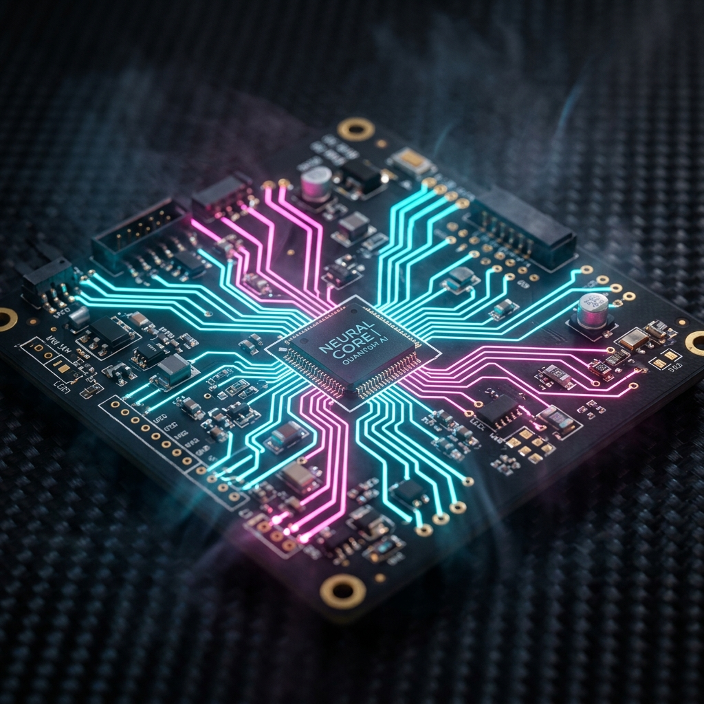

Transformational Learner Principles
As a digital navigator, my goal is to move beyond just "using tools" and instead apply principles that transform the learning experience into something meaningful and lasting.
Nurture
Creating a safe, judgment-free environment where learners feel comfortable making mistakes, troubleshooting, and rebuilding from scratch.
Empower
Providing the tools, scaffolding, and freedom for learners to take ownership of their own design decisions and engineering choices.
Inspire
Connecting abstract concepts to real-world applications, sparking a drive for lifelong curiosity and complex problem-solving.
The Meaning of "Nurture"
What “Nurture” Looks Like for Me as a Learner
Nurture, for me, means having space to learn without pressure to get everything right immediately. I do best when expectations are clear and when I can try something, make mistakes, and go back in with support instead of judgment. I need steady guidance—someone who models the steps, checks in, and helps me break things down when they feel overwhelming.
With technology, I feel nurtured when tools are introduced slowly and clearly. I need time to explore features, see examples, and understand how the tool fits into the task. Visuals, tutorials, and chances to practice without being rushed help me feel more confident.
What “Nurture” Looks Like for Me as an Educator
Nurture, for me, means creating a calm, steady learning environment where the learner feels supported and capable. I pay attention to how they respond when something is new or confusing, and I adjust the pace so they don’t feel overwhelmed. I don’t take over the work, but I also don’t leave them stuck.
With technology, I focus on introducing tools in a way that feels manageable. I model the steps, use visuals, and give time to explore before expecting anything polished. Troubleshooting becomes normal, not a sign of failure.

Strategies for a Nurturing Environment
- Modeling my thinking when a tool glitches or doesn’t behave as expected.
- Breaking tasks into clear, manageable steps.
- Using visuals—diagrams, screenshots, short demonstrations—to make the process clear.
- Giving time to explore tools before using them in a final task.
- Celebrating small wins so the learner sees steady progress.
Technical Learning Acquisition Strategy
My strategy for acquiring new technical skills follows a structured, iterative framework: Read & Research, Reach Out, and Rethink. I have applied these strategies across three distinct contexts during this journey:
1. Personal
(Outside the Classroom)
Strategy: Reach Out
Building this professional portfolio was a major technical milestone. To master the Antigravity interface and the complexities of site architecture, I reached out to a professional peer who showed me what to do and guided me through the setup. By combining this direct peer support with my own Read & Research, I shifted my technical toolkit from basic templates to a fully customized digital navigation project.
2. Professional
(Inside the Classroom)
Strategy: Read & Research
When designing the instructional flow for the circuits unit, I leaned heavily on the Read & Research strategy. I used Copilot and Gamma to brainstorm lesson ideas, refine explanations, and structure the learning sequence into professional-grade materials. This allowed me to curate high-quality content that was both accurate and pedagogically sound.
3. Supportive
(Supporting Someone Else)
Strategy: Rethink
While mentoring my student through the prototyping phase, I applied the Rethink strategy to help him navigate failures. When his doorbell circuit struggled with power issues, I guided him to "rethink" the physical wiring and source logic, turning an engineering obstacle into a moment of critical reflection and growth.
Analytical Foundations
Beyond the classroom build, my growth as a Digital Navigator is rooted in foundational professional standards, data safety, and pedagogical frameworks.
🤝 ISTE: Collaborator
I demonstrated the Collaborator standard through my dedicated partnership with my student throughout this unit. Rather than simply delivering instructions, I worked as a co-designer alongside him—balancing my guidance with his creative engineering choices.
🛡️ Cyber Security
My heightened awareness of cyber threats has made me much more cautious about data privacy. I now proactively reject non-essential cookies and scrutinize permission prompts before clicking "OK."
📂 Data Organization
I learned the immense value of labeling pictures immediately after taking them. Documentation moves quickly, and I realized that real-time labeling is essential for accurate data retrieval.
⚙️ TPACK Framework
The TPACK model describes the intersection where Content, Pedagogy, and Technology meet. It ensures that digital tools are chosen strategically to amplify the content goals.

The Future of My Practice
Reflecting on these ISTE standards throughout this project has shaped how I view my future roles as both a learner and an educator.